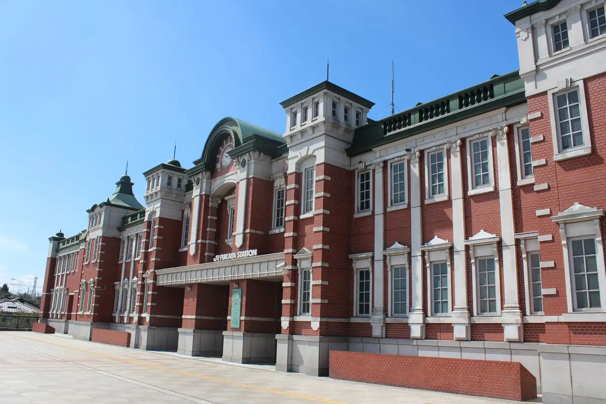
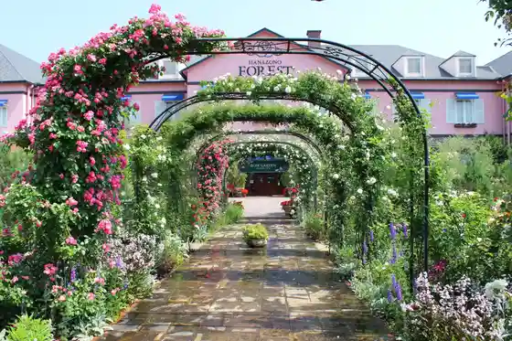
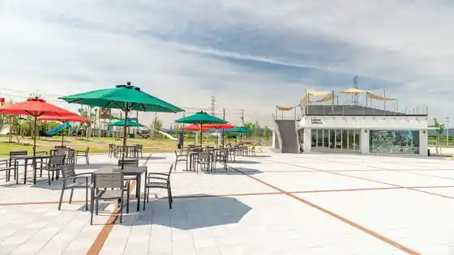
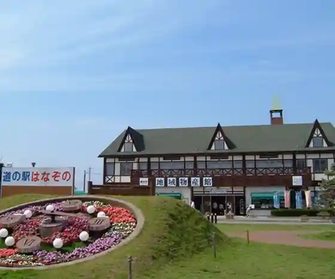
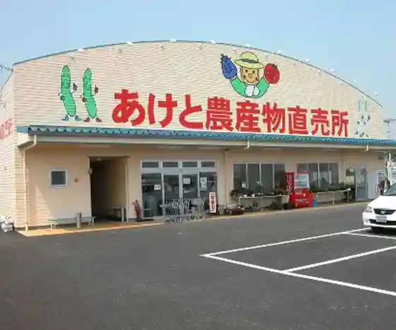

Japan / Saitama / Fukaya
Fukaya, Saitama: things to do, food and stays
Fukaya · Saitama
Fukaya
Highlighted on the Saitama map.

Sights
Fukaya Eki
Fukaya, Saitama · Official / source link
Flower Garden Foresuto
Fukaya, Saitama · 048-579-0101 · Official / source link

Fukaya Terasu Park
Fukaya, Saitama · 048-579-2022 · Official / source link

Roadside Station
Fukaya, Saitama · 048-584-5225 · Official / source link

Aketo Nosambutsu Chokubai Tokoro
Fukaya, Saitama · 048-551-5125 · Official / source link

Saitamaken Norin Park
Fukaya, Saitama · 048-583-2301 · Official / source link
Roadside Station
Fukaya, Saitama · 048-583-3369 · Official / source link
Kyu Shibusawa Tei (Naka no Ie)
Fukaya, Saitama · 048-587-1100 · Official / source link
Fukaya Green Park Akuaparadaisupateio (Pateio)
Fukaya, Saitama · 048-574-5000 · Official / source link
Fukaya Midori no Okoku
Fukaya, Saitama · 048-551-5551 · Official / source link